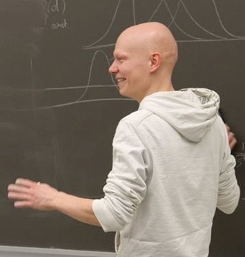

credit: Alison Rose
Welcome
I am the Head of Data Science at
Accelerate Diagnostics. My team and I develop algorithms to predict and quantify the susceptibility of bacterial samples to antimicrobials, using images from the automated Accelerate Pheno
® system containing a specialized, robotic, in-focus microscope, as well as the Accelerate Wave™ system, which is under development and uses in-line holographic imaging.
Before joining the fight against drug-resistant bacteria, I was a postdoctoral research fellow at the
Canadian Institute for Theoretical Astrophysics.
There, my research focused on statistical questions related to data analysis
and data interpretation. A specialty of mine are Bayesian algorithms aimed at
extracting all available information from observations without
introducing spurious signals. Astrophysical areas that I am interested
in are cosmology, radio astronomy, and magnetic fields in diffuse media
both inside and outside the Milky Way. I have contributed to the
Canadian Hydrogen Intensity Mapping Experiment, the
Planck Surveyor Mission, the
Global Magneto-ionic Medium Survey, and was an associated member of the
Dunlap Institute for Astronomy and Astrophysics.
I invite you to take a look around this website and get in touch if you find something that interests you.